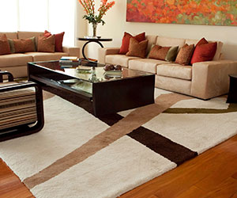
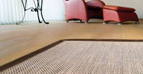
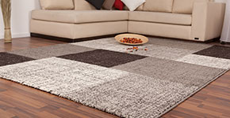
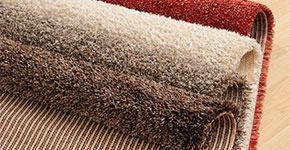

.png)

Trata tus pies con cariño
Tanto si son de felpa como de tejidos planos, redondas, cuadradas o de lana de oveja, las alfombras proporcionan comfort y ambiente. Las más grandes definen el área donde sentarnos en el salón,y las alfombras alargadas suavizan el pasar por los pasillos y puertas, dando la bienvenida a la casa.
Son una buena forma de mostrar tu estilo personal y de tratar tus pies con suavidad.
Son una buena forma de mostrar tu estilo personal y de tratar tus pies con suavidad.
Alfombras para cada gusto

Alfombras para juegos, tráfico, domitorios y mucho más.
Alfombra Brapal Art

Su alfombra Brapal Art es una inversión importante y debe ser cuidada como cualquier otra pieza de arte en su hogar.
Alfombras para tu casa

Coloca alfombras en tu casa. Las alfombras ayudan a prevenir la pérdida de calor a través del piso. Además, son más cálidas que la madera o la piedra. Las alfombras conservan calor, por eso te servirá colocarlas, acumularán el calor de la casa durante el día y a la noche estarán cálidas. Para maximizar esta característica, puedes colocar una alfombra bajo los rayos del sol cerca del mediodía, verás cuán cálida está a la tarde.